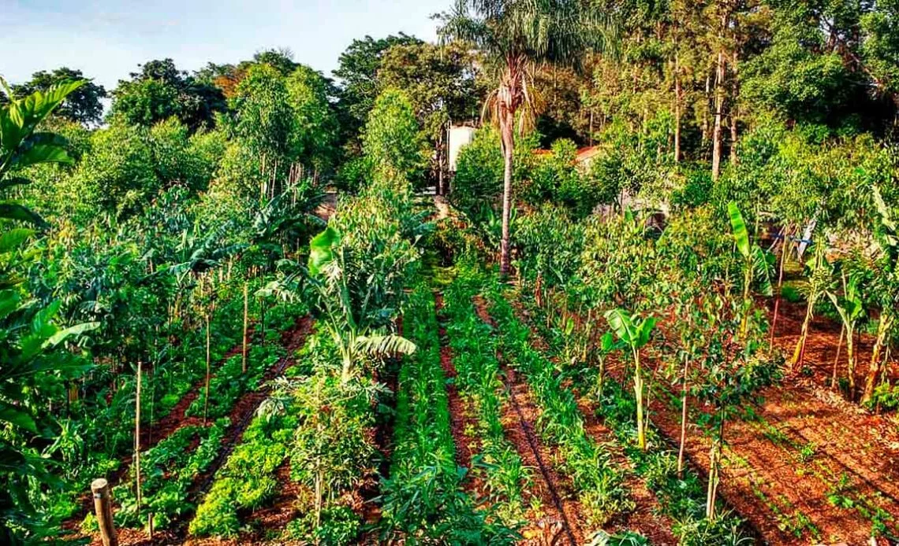
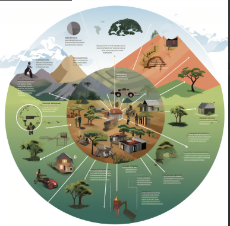
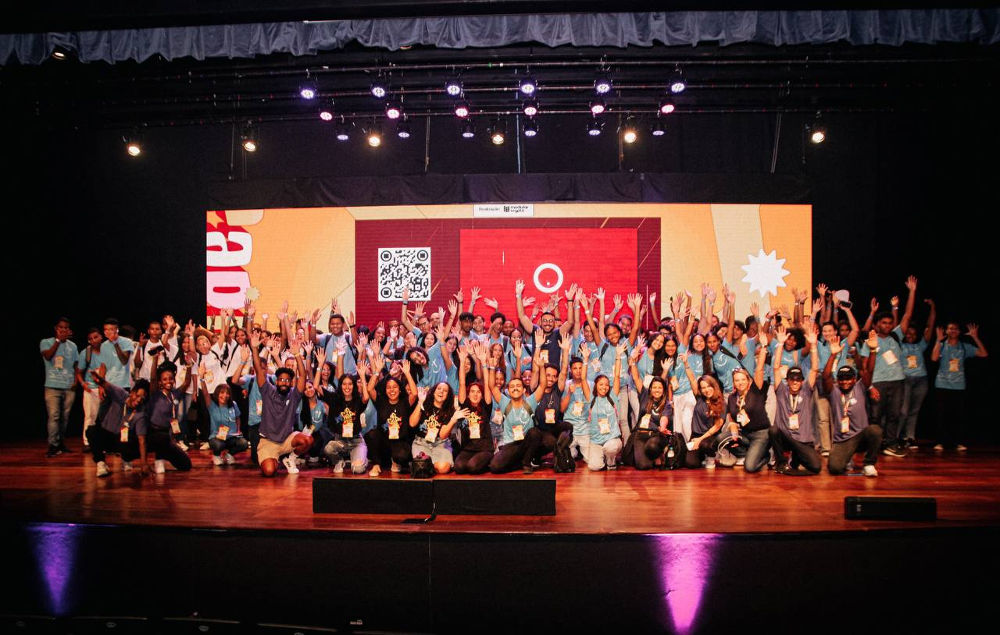

Ekonavi — Environmental Data Platform
BACEN LIFT Lab · Central Bank of Brazil
A blockchain-native platform for verifiable environmental and socio-economic data. Selected by the Central Bank's innovation lab (LIFT) to design data-proof solutions for regenerative finance and biodiversity-linked assets.
- Part of the Central Bank of Brazil's LIFT Lab innovation program
- Blockchain system for tamper-proof environmental and social impact data
- Designed for climate finance, carbon credits, and biodiversity-linked assets
- Integration with real-world monitoring systems and IoT devices
Visit Ekonavi →
Tokenized Green Bonds — Regenerative Finance Infrastructure
National Treasury Hackathon · Brazil
Blockchain-based mechanisms for sustainable finance developed at the National Treasury's official hackathon. The project integrated automation, tokenization, and transparent reporting standards aligned with international sustainability frameworks.
- Official collaboration with Brazil's National Treasury
- ISSB-aligned automation system for green bond issuance and tracking
- Impact measurement and ranking framework on blockchain
- Transparent reporting for institutional investors and regulators
Watch Presentation →

Liga — Geospatial Advisory
Independent Technical Advisory
Technical and governance advisory for geospatial Web3 solutions, ensuring compliance, scalability, and responsible integration of decentralized infrastructures for location-based services and territorial governance.
- Independent evaluation of blockchain/Web3 architecture
- Geo-based solutions for governance, land registry, and data privacy
- Advisory on privacy, compliance, and interoperability standards
- Smart contract architecture for geospatial data management
Visit Liga →

Blockchain na Escola — Web3 Education Platform
Education Program · Brazil
A pioneering initiative bringing blockchain and Web3 education to public schools and universities across Brazil. The program combines gamified learning with hands-on experience using digital wallets, NFTs, and DAOs.
- Education-as-a-Service model for digital literacy and Web3 fundamentals
- Curriculum development for blockchain, cryptocurrencies, and decentralized systems
- Implemented in public schools, universities, and community centers
- Hands-on workshops with real Web3 tools and platforms
Learn More →